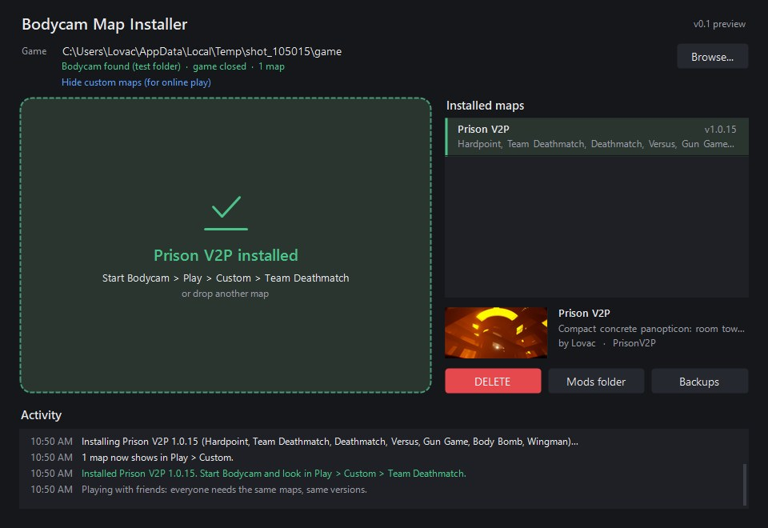
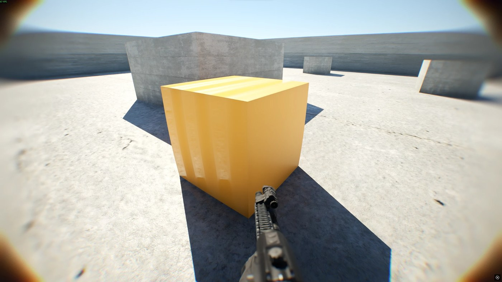

BODYCAM MAP IMPORTER

The app with Prison V2P installed.
INSTALL A MAP (4 STEPS)
- Close Bodycam.
- Start BodycamMapInstaller.exe. It finds Bodycam through Steam by itself.
Windows may say "Windows protected your PC" (new apps without a paid signature always get this): click More info > Run anyway. - Drag the map you downloaded (.bcmap, .zip or .pak) onto the window.
- Bodycam > Play > Custom > pick a mode > the map > host a private match and add bots.
Nothing is ever deleted: every replaced file goes to
Bodycam\Content\Paks\_backup\.

Prison V2P, a custom map installed with the app.
SAFE BY DESIGN
MAKE YOUR OWN MAP
Maps are built in Unreal Engine 5.5 with the Bodycam Map Kit: a ready Unreal project with the game's mode templates and one command that checks your level, builds all 7 modes (Hardpoint, Team Deathmatch, Deathmatch, Versus, Gun Game, Body Bomb, Wingman), bakes the bot navigation, makes the menu card from your screenshot, cooks and packs it. Bought or downloaded assets work too, with their own materials and shaders.
- Install Unreal Engine 5.5, Git for Windows and Python 3.
- Build your level, add team spawns and (for Hardpoint) a hardpoint zone.
- Run
newmap.sh MyMap "My Map" photo.png 0.1.0 - Share the .bcmap it makes. Players drop it on this app.
The Map Kit download is being cleaned for public release. Full step-by-step guide: the GitHub link under the download.

Kit Sample, the kit's test map: the orange crate uses its own material, made in Unreal, running in Bodycam.
HOW LONG THIS TOOK
Started in early September 2026. The app was written mid-September, the first map (Prison V2P) went up on 30 September, and the map kit passed its first full test on 2 October. About a month and over 130 work sessions.
Fan-made: not made, supported or endorsed by Reissad Studio. Bodycam belongs to Reissad Studio. Private matches with bots only.